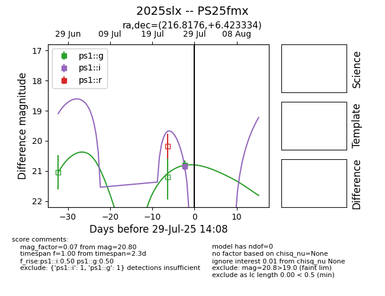

Target 2025slx at 2025-07-29 14:08, see:
TNS: wis-tns.org/object/2025slx
YSE: ziggy.ucolick.org/yse/transient_detail/2025slx
alt names
2025slx (yse,tns)
PS25fmx (panstarrs)
coordinates:
equatorial (ra, dec) = (216.8176,+6.42333)
galactic (l, b) = (354.9980,+59.22864)
photometry
last ps1::g=20.80, ps1::i=20.84
1 ps1::g, 1 ps1::i detections
